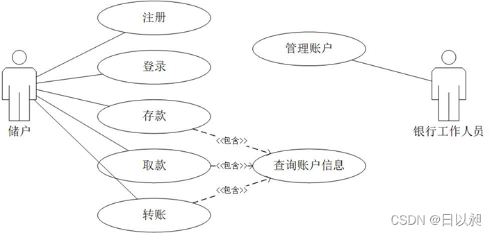
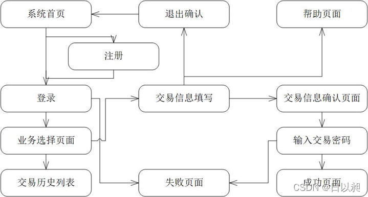
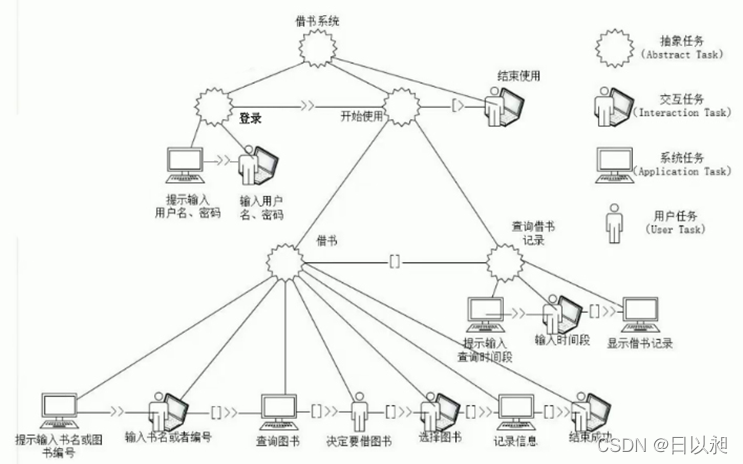
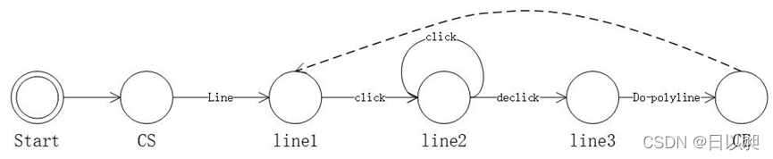

目录
- 人机交互绪论
- 感知和认知基础
- 人机交互设备
- 交互技术
- 界面设计
- 人机交互界面表示模型与实现
- Web界面设计
1 人机交互绪论
1.人机交互：关于设计、评价和实现供人们使用的交互式计算机系统，并围绕相关的主要现象进行研究的学科。
2.人机交互技术的研究内容：
- 人机交互界面的表示模型与设计方法；
- 可用性分析与评估；
- 多通道交互技术；
- 认知与智能用户界面；
- 群件；
- Web设计；
- 移动界面设计。
3.人机交互技术的发展历史：
- 命令行界面交换阶段：计算机语言经历了由最初的机器语言，而后是汇编语言，直至高级语言的发展过程。这个过程也可以看作早期的人机交互的一个发展过程。
- 图形用户界面交互阶段：图形用户界面的出现，使人机交互方式发生了巨大变化。其主要特点是桌面隐喻、WIMP技术、直接操纵和“所见即所得”。
- 自然和谐的人机交互阶段：用人的多种感觉通道和动作通道，以并行、非精确的方式与(可见或不可见的)计算机环境进行交互，使人们从传统的交互方式的束缚解脱出来，进入自然和谐的人机交互时期。
4.生活中常见的人机交互技术应用的例子：Siri、手机环境光线感应器自动调节屏幕亮度、生物特征识别技术。
5.鼠标／图形用户界面：道格拉斯·恩格尔巴特在60年代发明了鼠标和图形用户界面。70年代在施乐公司的帕罗奥尔托研究中心的努力下，鼠标和图形用户界面得到了进一步的完善，80年代在苹果公司的努力下，它终于完成了走向大众的进程。至此，显示在计算机屏幕上的内容在可视性方面大大改善，人们再也不用象从前一样需要记忆计算机文件的名称和路径。由于图形用户界面减轻电脑操作者的记忆负担以及提供了一个良好的视觉空间环境，计算机终于发展成为一种工作场所。
6.T.H.Nelson说：“设计对象时，要想让对象既简单又清楚，设计者至少要花费比一般设计方法多一倍的时间。首先，要集中精力弄明白简单、清楚的系统将怎样工作，接下来所需的步骤是让这套系统确实这样工作。通常这些步骤比实现普通系统的步骤要困难和复杂许多。实现这个系统需要我们对简明性不懈追求，即使障碍重重，也决不放弃。”对他的这段话，你是怎么理解的？有什么看法或感受？
答：人机交互界面的设计为了系统的用户友好性，要包含用户对系统的理解，抛开标准，从用户出发，比如从用户角色通常使用产品的场景进行分析。让我想到了早期的windows界面设计理念，定位windows1.x操作系统目标用户在工作场景中使用。所以回收站被拟物成为了一个垃圾桶沿袭至今。
7.网站
http://www.chinaUI.com/ （优艾网—中国人机界面设计门户网站）
http://www.dolcn.com/ （设计在线网站群）
http://www.blueiden.com/ （蓝色理想—网站设计与开发人员之家）
ZCOOL - Designers interaction platform - access to ZCOOL,discover better designs！ （站酷—设计师互动平台）
优设网官网 - UISDC - 设计师交流学习平台 - 看设计文章，学软件教程，找灵感素材，尽在优设网！ （优设网—设计师交流学习平台）
Dribbble - Discover the World’s Top Designers & Creative Professionals （Dribbble—Discover the world’s top designers&creativities）
技术热点：产品设计思路、UI动效、APP视觉设计等。
8.不方便的系统：验证码：有些网站的验证码喜欢弄得及其的扭曲而且不容易识别，给交互带来不好的体验，浪费时间且使人烦躁。
9.因向用户提供最佳体验而获得成功的数字产品或服务。
答：淘宝网：结构清晰而合理（多级导航，标签的包含关系），流程顺畅而便捷的（淘宝的主流程就是用户通过搜索或者分类或者推荐等途径->找到需要的商品->发起购买->填写信息->付款->商家发货->用户确认收货->评价服务，另外还会涉及到售前沟通、售后沟通、退货处理等等可能存在的支线环节），让用户感知流畅（淘宝商品页“更多”按钮动效），符合用户习惯（淘宝底栏功能按钮和布局）。
2 感知和认知基础
1.认知心理学：20 世纪 50 年代中期在西方兴起的一种心理学思潮和研究方向。广义指研究人类的高级心理过程，主要是认识过程，如注意、知觉、表象、记忆、创造性、问题解决、言语和思维等。狭义相当于当代的信息加工心理学。即采用信息加工观点研究认知过程。它将人看作是一个信息加工的系统，认为认知就是信息加工，包括感觉输入的编码、贮存和提取的全过程。按照这一观点，认知可以分解为一系列阶段，每个阶段是一个对输入的信息进行某些特定操作的单元，而反应则是这一系列阶段和操作的产物。信息加工系统的各个组成部分之间都以某种方式相互联系着。
2.简述为什么说“了解并遵循认知心理学的原理是进行人机界面设计的基础？”。
答：人机界面设计，主要用理论来指导设计。了解认知心理学，一方面防止出错，另一方面用以提高工作效率。了解认知心理学，可以使设计者对用户有一个较为清晰的认识，也就是说对人的心理基础要有所了解，以提高人机界面设计的水平，增强用户与计算机之间的友好程度，设计出：在显示角度，界面的布局安排符合人的观察习惯；在操作角度，减少动作能力要求，按钮符合用户想象的操作目的，消除用户识别鸿沟，友好、方便易用的用户界面，从而使设计满足用户的要求。
3.列举几种不同感官在交互体验中的应用。
- 视觉呈现：可视化界面、图形化界面、色彩丰富的图标、动态的视频等。
- 听觉反馈：按键的声音、操作（如清空回收站）的声音、游戏音效等。
- 真切的触感：力反馈作用、震动等。
- 嗅觉设计：用微店压泵控制气味随着画面散发等。
4.知觉特性：
- 知觉的选择性：分化对象和背景的选择性。
- 知觉的整体性：当一个残缺不全的部分呈现到眼前时，人脑中的神经联系马上被激活，从而把知觉对象补充完整。
- 知觉的理解性：旧经验与新刺激建立多维度、多层次的联系，以保证理解的全面和深刻。
- 知觉的恒常性：当客观条件在一定范围内改变时，人的知觉映像在相当程度上却能保持着它的稳定性。
5.人的认知过程分为5类，分别是：
感知和识别：人们可以使用感官从环境中获取信息，并把它转变为对物品、事件、声音和味觉的体验。
注意：注意通常是指选择性注意，即注意是有选择的加工某些刺激而忽视其他刺激的倾向。
记忆：记忆就是回忆各种知识以便采取适当的行动。
问题解决：问题解决是由一定的情景引起的，按照一定的目标，应用各种认知活动、技能等，经过一系列的思维操作，使问题得以解决的过程。
语言处理：阅读、说话和聆听这三种形式的语言处理具有一些相同和不同的属性。相似性之一是，不论用哪一种形式表示，句子或短语的意思是相同的。但是，人们对阅读、说话和聆听的难易有不同的体会。
6.影响认知的因素有：
1.情感：情感因素会影响人的感知和认知能力。如积极的情感会使人的思考更有创造性、解决复杂问题的能力更强，而消极的情感使人的思考更加片面，还会影响其他方面的感知和认知能力。
2.个体差异：个性差异可能是长期的，如性别、体力和智力水平；也可能是短期的，如压力和情感因素对人的影响；还可能是随时间变化的，如人的年龄等。
3.动机和兴趣：如果个体从事感兴趣的活动，往往会激发更为积极的认知过程，有利于增加探索活动并提升认知评价。
7.概念模型：概念模型指的是一种用户能够理解的系统描述，它使用一组集成的构思和概念，描述系统做什么、如何运作、外观如何等。
分布式认知模型：分布式认知描述的是认知系统中发生了什么，它通常描述人员之间的交互，人们使用的物品及工作环境。分布式认知的主要目的是要从信息传播媒介的角度来描述交互。也就是说，它考虑的是信息如何表示，信息在流经不同个人以及使用不同物体时是如何重新表示的。这类信息的转变也称为“表示状态的转变”。
分布式认知在计算机应用系统设计工程中的指导作用举例：①分布式认知的思想可用于指导系统的设计：如分布式认知的思想可用于指导像电子商务等系统的设计。设计合适的、易于记忆的表单、标签等人工制品，系统通过建立任务追踪使协作的用户对任务情景以及情景脉络有清楚的认识等，都是符合分布式认知活动特点的人机交互设计方法。
②计算机支持的协作学习：计算机支持的协作学习是近年来很受关注的研究方向之一。人们希望研究建立一种学习环境来支持分布式认知活动，包括学习共同体、概念学习研究知识共同体等。进行设计者探讨利用分布式认知理论研究成果设计更好的CSCL学习环境和交互方法。
③连接计算机支持的协同工作和人机交互的桥梁中的重要组件：分布式认知为协同工作中共享信息是如何表象以及如何使用的提供了一个理论框架。运用分布式认知的理论框架，研究移动性对协同工作中合作的影响也是人机交互的研究热点之一。
3 人机交互设备
1.请选择一个最近人气很旺的数字产品或者服务，看看这些产品和服务中有哪些因素让交互变得容易，有哪些因素不利于交互。
答：华为的折叠屏手机。自去年起，华为折叠屏由于其便携的特点，赢得了部分市场的份额与口碑。但不少消费上手体验之后，也发现屏幕出现了各种问题，比如隆起、闪屏、黑屏的情况，最严重还会导致手机完全不能使用。
2.对虚拟现实交互设备进行分类归纳总结，并进行优缺点比较。
答：（1）三维空间定位设备：
空间跟踪定位器——在虚拟现实应用中，空间跟踪定位器的主要性能指标包括定位精度、位置修改速率和延时。在虚拟现实技术中广泛使用的是低频磁场式和超声式传感器。在作用范围较大的情况下，低频磁场式传感器比超声波式传感器有较明显的优点，但在作用范围内存在磁铁的物体时，低频磁场式传感器的精度明显降低。
数据手套——可以捕捉手指和手腕的相对运动，可以提供各种手势信号；也可以配合一个跟踪器，跟踪手的实际位置和方向。
触觉和力反馈器——要考虑到模拟力的真实性、施加到人手上是否安全、装置是否便于携带并让用户感到舒适等问题。
（2）三维显示设备：立体视觉
头盔式显示器——优点：由于两个显示屏幕处于用户佩戴的头盔中，分别覆盖用户双眼的视野，使得用户只能够感知来自计算机所生成的图像，沉浸感极强。缺点：单用户的局限性、显示屏幕分辨率不高、头部跟踪延迟、头盔过重、以及屏幕距离眼睛过近等
基于投影的沉浸式虚拟现实环境——包括workbench、PowerWall、CAVE等，实现了大视角、全景、沉浸式立体显示，且支持多用户共享。缺点：需要借助立体眼镜等特殊的交互设备。
裸眼立体显示器——通过显示技术替代了之前通过眼镜偏振片实现的偏振滤光成像环节，其将画面分割成给左、右眼观看的两个不同角度的影像，再利用视觉暂留原理，在人脑形成立体画面。优点：不需要佩戴立体眼镜。缺点：如果用户观看液晶的角度不同，则可能无法看到三维效果，而且多焦点影像极易造成眼睛疲劳。
真三维显示——实现360度视角观察的三维显示技术，是现实景物的最真实再现。技术不够成熟，没有标准化和产品化。
3.给出一个实际应用中交互设备整合应用的示例。
答：目前，包括Wii、Xbox、PS3等实现的基于触摸或体感的游戏通过综合应用视频、音频、空间定位等技术，给出了良好的娱乐体验。各类主题公园，科技馆等的一些展示项目也给出交互设备整合应用的成功案例。
4 交互技术
1.列出你所熟悉的软件系统中涉及到的交互技术？
几乎所有的应用软件都有WIMP界面用于交互，图形用户界面又称为WIMP界面，由窗口(windows)、图标(icons)、菜单(menu)、指点设备(pointing device)四位一体，形成桌面(desktop)。
Microsoft Office中的Word中用到了定位、定值、选择、拖动等功能。
Apple系列的一些产品，主要有多点触控等交互技术。
2.简述Photoshop或者AutoCAD中的二维图形交互技术。
答：Photoshop主要有定位、定值、选择、笔划等基本功能，除此之外还有一些辅助交互功能，比如几何约束（用于对图形的方向、对齐方式等进行规定和校准）、引力场（可以看作是一种定位约束，通过在特定图素，如直线段，周围假想有一个区域，当光标中心落在这个区域内时，就自动地被直线上最近的一个点所代替，就好像一个质点进入了直线周围的引力场，被吸引到这条直线上去一样）、拖动（要把一个对象移动到一个新的位置时，当光标移动时拖动着被移动的对象）、橡皮筋（被拖动对象的形状和位置随着光标位置的不同而变化。）、操作柄技术（可以用来对图形对象进行缩放、旋转、错切等几何变换。先选择要处理的图形对象，该图形对象的周围会出现操作柄，移动或旋转操作柄就可以实现相应的变换）等二维交互技术。
3.简述某一个三维交互软件如Maya或3ds max中的三维图形交互技术。
答：Maya：
三维Widgets：三维交互界面中的一些小工具。三维空间中漂浮的菜单、用于拾取物体的手的三维图标、平移和旋转指示器等。
三视图输入：用二维输入设备在一定程度上实现三维的输入。如果输入一个三维点，只要在两个视图上把点的对应位置指定后 便唯一确定了三维空间中的一个点；把直线段上两端点在三视图上输入后便可决定三维空间的一条直线；把一个面上的各顶点在三视图上输入后，也唯一确定了三维空间中的一个面；如果把一个多面体上的各面均用上述方法输入， 也就在三维空间中输入了一个多面体。
4.windows辅助功能选项：为帮助人们根据自身特点更好地使用计算机设备，windows操作系统提供了快速配置和使用计算机的辅助特性的人性化设计。
①登陆进入windows操作系统。
②在开始菜单中单击控制面板，继续双击“辅助功能选项”图标，请记录，在“辅助功能选项”对话框中，有哪些选项卡可供设置选择？写出这些选项及其功能。
③请操作：
为使行动不便的人通过鼠标等设备输入数据，应该如何设置？
答：选择“开始”——“所有程序”——“附件”——“屏幕键盘”，这样显示屏上会出现一个键盘，用户可以通过鼠标点击这个键盘实现数据输入。
在上图界面快速访问常用工具中选择“启动屏幕键盘”也可以。
为便于视力不好的用户读取计算机屏幕上的字符信息和图形，应该如何设置？
答：选择“开始”——“所有程序”——“附件”——“放大镜”，这样鼠标所指的地方会在屏幕的上方显示出放大的效果，还可以设置放大镜的放大位数。
在上图界面快速访问常用工具中选择“启动放大镜”也可以。
如果需要为视力障碍用户提供文字到语言的转换工具，使得能够朗读屏幕所显示的内容等，应该如何设置？
答：在上图界面快速访问常用工具中选择“启动讲述人”。
5 界面设计
1.界面设计的一般原则:（1）界面要具有一致性。一致性原则在界面设计中最容易被违反，同时也最容易实现和修改。风格一致的人机界面会给人一种简洁、和谐的美感。
（2）常用操作要有快捷方式。常用操作的使用频度大，应该减少操作序列的长度。为常用操作设计快捷方式，不仅会提高用户的工作效率，还使界面在功能实现上简洁而高效。定义的快捷键最好要与流行软件的快捷键一致。
（3）提供必要的错误处理功能。在出现错误时，系统应该能检测出错误，并且提供简单和容易理解的错误处理功能。错误出现后系统的状态不发生变化，或者系统要提供纠正错误的指导。对所有可能造成损害的动作，坚持要求用户确认。
（4）提供信息反馈。对操作人员的重要操作要有信息反馈。对常用操作和简单操作的反馈可以不作要求，但是对不常用操作和至关重要的操作，系统应该提供详细的信息反馈。用户界面应能对用户的决定做出及时的响应，提高对话的效率，尽量减少击键次数，缩短鼠标移动距离，避免使用户产生无所适从的感觉。
（5）允许操作可逆。操作应该可逆，这对于不具备专业知识的操作人员相当有用。可逆的动作可以是单个的操作，也可以是一个相对独立的操作序列。对大多数动作应允许恢复（UNDO），对用户出错采取比较宽容的态度。
（6）设计良好的联机帮助。虽然对于熟练用户来说，联机帮助并非必需；但是对于不熟练用户，特别是新用户来说，联机帮助具有非常重要的作用。人机界面应该提供上下文敏感的求助系统，让用户及时获得帮助，尽量用简短的动词和动词短语提示命令。
（7）合理划分并高效地使用显示屏幕。只显示与上下文有关的信息，允许用户对可视环境进行维护，如放大、缩小窗口；用窗口分隔不同种类的信息，只显示有意义的出错信息，避免因数据过多而使用户厌烦；隐藏当前状态下不可用的命令。
上述7个原则都是进行图形用户界面设计应遵循的最基本的原则。除此之外，针对图形用户界面的不同组成元素，还有许多具体的设计原则。
2.任务分析主要包括哪些内容。
答：任务分析是交互设计至关重要的环节，在以用户为中心的设计中，关心的是如何从用户那里理解和获取用户的思维模式，进行充分、直观的表达，并用于交互设计；任务分析包括使用行为分析、顺序分析、协作关系分析、工序约束陈述等内容，当所有任务分析完毕，就可以用一览表的形式描述系统中的所有用户及其可能需要完成的所有任务。
3.根据介绍的人机交互界面设计方法，完成网上银行系统的交互界面分析和设计，包括账户查询、存款、取款、转账等业务流程。
答：（1）对象建模分析：分析网上银行系统涉及的对象有储户、银行工作人员、交易、账单、储户账户、交易历史等；涉及的操作有用户注册、登录、查询账户信息、存款、取款、转账、管理账户等。

（2）视图抽象设计：分析网上银行系统的视图可能包括用户选择业务视图、交易历史列表视图、用户选中某个具体的交易历史的信息视图、交易信息填写视图、输入交易密码视图、交易成功反馈视图等。
（3）概要设计：划模块,定接口,理流程。
（4）视图关联设计：

（5）视图全面设计：使用相同的界面风格；使用相同的识别标志；系统视图结构清晰，在每个界面上明确表示当前视图与整体系统的关系；使用一致的术语，特别是在不同语言的版本之间保持信息翻译的一致性。
4.图形用户界面的共同特点是以窗口管理系统为核心，使用键盘和鼠标器作为输入设备。窗口管理系统除了基于可重叠多窗口管理技术外，广泛采用的另一核心技术是事件驱动(event-driven)技术。
WIMP界面可看作是第二代人机界面，是基于图形方式的人机界面。在WIMP界面中，人被称为用户，人机通过对话进行工作。用户只能使用手这一种交互通道输入信息，通过视觉通道获取信息。在WIMP界面中，界面的输出可以为静态或动态的二维图形或图像等信息。
这种方式能同时输出不同种类的信息，用户也可以在几个工作环境中切换而不丢失几个工作之间的联系，通过菜单可以执行控制型和对话型任务。由于引入了图标、按钮和滚动条技术，大大减少键盘输入，提高了交互效率。基于鼠标和图形用户界面的交互技术极大地推动了计算机技术的普及。
(1)图形用户界面的三个重要思想
桌面隐喻：指在用户界面中用人们熟悉的桌面上的图例清楚地表示计算机可以处理的能力。 隐喻的表现方法:静态图标、动画、视频
所见即所得：显示的用户交互行为与应用程序最终产生的结果是一致的。
直接操纵：直接操纵是指可以把操作的对象、属性、关系显式地表示出来，用光笔、鼠标、触摸屏或数据手套等指点设备直接从屏幕上获取形象化命令与数据的过程。直接操纵的对象是命令、数据或是对数据的某种操作。
(2)设计图形用户界面的原则
一般性原则：界面要具有一致性、常用操作要有快捷方式、提供简单的错误处理、对操作人员的重要操作要有信息反馈、操作可逆、设计良好的联机帮助、合理划分并高效地使用显示屏、保证信息显示方式与数据输入方式的协调一致
颜色的使用：颜色是一种有效的强化手段，同时具有美学价值。使用颜色时应注意如下几点：限制同时显示的颜色数；画面中活动对象的颜色应鲜明，而非活动对象应暗淡；尽量避免不相容的颜色放在一起，如黄与蓝，红与绿等，除非作对比时用； 若用颜色表示某种信息或对象属性，要使用户理解这种表示，并尽量采用通用的表示规则。
3)图标的设计：图标是可视地表示实体信息的简洁、抽象的符号。图标设计是方寸艺术，需要在很小的范围内表现出图标的内涵。设计图标时应该着重考虑视觉冲击力，要使用简单的颜色，利用眼睛对色彩和网点的空间混合效果，做出精彩图标 。
4)按钮的设计：设计按钮应该具有交互性，应该有3到6种状态效果(点击时的状态、鼠标放在上面但未点击的状态、点击前鼠标未放在上面时的状态、点击后鼠标未放在上面时的状态、不能点击时的状态、独立自动变化的状态)，按钮应具备简洁的图示效果，应能够让使用者产生功能上的关联反应。属于一个群组的按钮应该风格统一，功能差异大的按钮应该有所区别。
5)屏幕布局的设计：设计屏幕布局(Layout)时应该使各功能区重点突出 ,应遵循如下几条原则：平衡原则、预期原则、经济原则、顺序原则、规则化
6)菜单界面的设计：菜单在图形界面的应用程序中使用得非常普遍，是软件界面设计的一个重要组成方面，描述了一个软件的大致功能和风格。 菜单中的选项在功能上与按钮相当，一般具有下列一种或几种类型的选项：命令项、菜单项和窗口项。 菜单的结构一般有单一菜单、线状序列菜单、树状结构菜单、网状结构菜单等，其中树状结构菜单是最常见的结构。
设计菜单界面时应注意的一般性原则：功能组织菜单，合理分类，并力求简短，前后一致；合理组织菜单界面的结构与层次；按一定的规则对菜单项进行排序；菜单选项的标题要力求文字简短、含义明确，并且最好以关键词开始；常用选项要设置快捷键；充分利用菜单选项的使能与禁止、可见与隐藏属性；使用弹出式菜单 。
7)填表输入界面的设计：在处理大量相关数据的场合下，需要输入一系列的数据，这时填表输入界面是最理想的数据输入界面。在设计填表输入界面时应遵循的原则：一致性；有含义的表格标题；使用易于理解的指导性说明文字；栏目按逻辑分组排序；表格的组织结构和用户任务相一致；光标移动方便；出错提示；提供帮助；表格显示应美观、清楚，避免过分拥挤。
5.风格设计分析：针对用户年轻，更加偏好色彩丰富，但是针对于此软件要求的功能应符合操作简单。则主要用鼠标点击操作就可以方便的查看文件。虽然要追求界面的时尚和华丽，但是界面过于艳丽，容易导致用户视觉疲劳。则轻松的淡蓝色为主配色，灰色系为主。
用户导航显示：简单明了，文字描述要明了，通过文字和图标配合示意，用户看到按钮，可以快速的明白此按钮功能。布局应该满足用户习惯，结合广大软件按钮布局方式。
对自已设计界面的可用性评估：
在进入界面开始，会有导航，由于主要面对的用户群是大学生，都有一定电脑操作基础的人群，设计的这个界面简洁，按钮文字很清楚的描述了所带的功能，用户会比较快的时间内掌握如何使用。
此界面清爽，颜色柔和，并且增加了一些小工具结合良好的界面，估计用户对这款软件会比较满意。
此界面按钮和字体设计比较大，排版也很清晰，在很好满足功能的同时尽可能划分不同功能的区域于固定位置，这样可以避免由于界面过于繁杂和密集导致用户产生疲劳感，而且各种功能的实现基本都是通过主界面的导航实现的，这样可以使用户方便简捷的操作，从而让用户得到较好的用户体验。
6 人机交互界面表示模型与实现
用GOMS模型给出一个拼图游戏的任务描述。
答：
Task: Puzzle
GOAL: PUZZLE
GOAL: SELECT-PUZZLEPIECE-Task repeat until puzzle task is finished
GOAL: SELECT-PUZZLEPIECE
select: USE-CLICK-METHED
Select a puzzlepiece from the puzzlepieces
GOAL: PLACE-PUZZLEPIECE
place: USE-MOUSEMOVE-METHED
Drag the puzzle to the place you think is appropriate
GOAL: CHECK-PUZZLE
Check whether the selected puzzlepiece is fit
If the puzzlepiece is not fit, SELECT-NEXT-PUZZLEPIECE
2.用任务模型（CTT）给出用户使用图书馆在线借书系统的任务模型。
答：

3.用状态转换图描述一个绘制折线的对话过程。
答：

7 Web界面设计
- Web界面设计应该遵循如下基本原则：
（1）以用户为中心：以用户为中心是Web界面设计必须遵循的一个主要原则。它要求把用户放在第一位。设计时既要考虑用户的共性，同时也要考虑他们之间的差异性。
（2）一致性：Web界面设计还必须考虑内容和形式的一致性。
（3）简洁与明确：Web界面设计属于设计的一种，要求简练、明确。保持简洁的常用做法是使用一个醒目的标题，这个标题常常采用图形来表示，但图形同样要求简洁。另一种保持简洁的做法是限制所用的字体和颜色的数目。
（4）体现特色：只有丰富特色、内容翔实的网页才能使浏览者驻足阅读。
（5）兼顾不同的浏览器：随着Internet的发展，浏览器也在不断更新。不同公司不断推出自己的浏览器，同一种浏览器在不同阶段也有不同的版本。
（6）明确的导航设计:由于网站越来越复杂，导航系统变得十分必要。
2.Web界面一般包括的主要元素有
（1）内容。Web界面的内容主要包括
a．文字 ：主要作为WEB界面上的描述性文字，传达相关含义；
b．框架：是页面规划的一个结构性描述，用于对页面的各种元素进行划分
c．表格：完成相应的数据展示的一种页面元素
d．图像：提供二维图片，对页面的整体美观起到一定作用
e．动画：增强和丰富页面的动态效果
f．视频：页面上嵌入的视频链接区域，用于链接到相关的视频播放地址
g．导航：实现Web网站各页面之间的连接浏览导航，主要分布翻页，跳转
h．超文本、超媒体链接：实现在不同网站之间的链接，是Web的真正魅力所在
（2）风格: Web界面的风格是指网站的整体形象给浏览者的综合感受；
（3）布局：Web界面布局就是指如何合理地在界面上进行内容的分布和安排，使Web页面能更符合人们的审美及表现相应的主题；
（4）色彩 : 是指使Web界面给人以视觉冲击的色彩运用的方法和技巧；
3.Web界面设计是人机交互界面设计的一个延伸，是人与计算机交互的演变。Web界面设计与站点外观直接相关，站点的界面外观是否友好直接关系到是否能吸引人的关注。人性化的设计是Web界面设计的核心，如何根据人的心理、生理特征，运用技术手段，创造简单、友好的界面，是Web界面设计的重点。
(1) Web信息交互模型:用来解释Web的人机界面性质的一个模型，它提出网页是用户和知识之间的界面。对于信息提供者来说包括信息的表达，对于使用者来说则是信息的获取。信息的表达与获取分别受到两者认知结构的制约。
模型涉及到信息的三种类型
1)数据：当一条信息被反复、简单的提供时称为数据，比如机票价格。
2)复杂信息：而用来叙述事件时称为复杂信息，如多媒体信息。
3)过程性信息：在信息有明确目标，并相互作用时称为过程性信息，如在线练习、在线测试等。
模型涉及到信息的两种特性：1)动态性：信息在不断的变化，具有动态性；2)一致性：信息元素的组织方式具有一致性
(2)Web信息设计模型:是解释Web人机界面性质的另一个模型，是一种研究网页的信息设计模型。设计模型中要考虑到信息的两个方面：1)第一是应该呈现或略去什么信息。 2)第二个方面指的是信息该如何被表现。
(3)Web界面设计基本原则
了解浏览者的心理状态
内容与形式的统一
减少浏览层次
特点明确
统一整体的形象
Web界面设计的3C原则
(4)Web界面概要设计
1)Web界面框架设计：Web网站规划 、建立原型系统、详细设计、正式实施
2)Web界面的内容与风格的设计:网站内容设计的原则、Web界面的风格
3)Web界面设计的语言与文化：网站应设置多语言选择，在网站设计和建设中进行跨文化研究
(5)Web界面设计要素
Web界面布局
Web界面的色彩
Web界面的字体
Web界面的动画与多媒体
Web界面的导航
(6)Web界面设计技术与工具
要设计好的Web界面，需要有良好的设计工具，随着Internet网络的发展，国际组织和许多互联网软件开发商制订了若干标准，开发了不同的Web界面设计工具。主要的技术包括超文本标记语言HTML、客户端脚本语言JavaScript、JavaApplet、服务器端脚本语言。
页面编辑器主要包括：1)MicroSoft公司 的Frontpage；2)Macromedia公司 的Dreamweaver，Dreamweaver对于动态网页的支持特别好，可以轻而易举地做出很多眩目的互动页面特效，Dreamweaver与Flash、Firework并称为Macromedia的网页制作三剑客。
辅助工具主要包括：1)AceHTML Pro 6.0—全功能的 HTML & JavaScript 编辑器；2)Antenna Web Design Studio—强大的可视化网页设计软件；3)Easy HTML—简单的所见即所得的HTML 编辑器，有固定、类似浏览器的界面；4)Easy Web Editor—是一个 Web 发布工具，允许不了解HTML而在所见即所得环境中编辑Web网页。
4.欣赏：
1、界面设计工具：Dreamweaver CS6，辅助工具Photoshop CS6
2、设计内容：个人主页
本网站内容充实， 在主页的设计上运用了模板，框架等。分页面上运用了导航条。插入了动态图片以及视频等给网增加了美观度，在首页的设计上本着简单易懂的原则，用户只要点击链接就能看到自己想看到的连接内容。
3、Web网站的概念设计：
网站的超文本结构选择层次结构，首页作为根网页，在主页上设计了各种选择。
将网站的导航放在最上方，简单操作，用户能以一种满意的方式找到所需的信息，与流行的方式相同。
兼顾不同的浏览器设计：在编码时使用JavaScript等编程工具或功能，探测用户浏览器的类型和版本等参数及对于特定功能的支持情况，根据探测结果显示适用于特定浏览器的网页的内容。
4、界面设计的基本原则：
（1）了解浏览者的心理状态
（2）内容与形式的统一
（3）减少浏览层次
（4）特点明确
（5）统一整体的形象
Web网站设计的3C原则：
（1）简洁
因为做的是个人网站，所以特点鲜明，导航放在网页的最上方，版本及设计者信息放在网站最下方，，所用的字体为微软雅黑，整体的颜色为绿色，页面上所有的元素都有明确的含义和用途。
（2）一致性
各个页面都使用相同的页边距、文本，图形之间使用相同的间距；主要图形、标题和符号旁边留下相同的空白，在每页都放有导航图标。页面中的每个元素与整个页面以及网站的色彩和风格上保持了一致，图标都采用了相同的设计风格。文字的颜色同图像保持了一致。
5、Web界面规划
此网站的目的是建立一个个人主页，主要目的是展示自我，让读者浏览信息，所以网站的功能都放在导航页上。
本网站的面向客户群是二十岁左右的青年，所以会加一下特效，而本网站的风格和现在个人网站的主流风格类似，所以客户用起来比较上手。
6、Web界面设计概要设计
先建立网站的原型系统。首先，打开Dreamweaver CS6软件的界面，在“站点”菜单栏中的站点选择“新建站点”选项。接下来在弹出的页面中选择“高级”，将站点定义为“我的个人主页”，选择存放的文件夹。站点建好之后，在Dreamweaver界面右部的文件窗口里会显示新建好的站点，接着在站点上点击鼠标右键，新建了两个文件夹，分别命名为 flash, images。它们用来存放网页信息和制作过程中所需要的图片。然后在我的个人主页文件夹下建立 “moyan.html” 、“about.html” 、“photo.html” 、“message.html” 、“flash.html”和“css.css” 六个文件，它们将成为我网站中的主要页面和样式表文件。其他页面在设计过程中可以加入。
7、Web界面设计要素
（1）界面布局：
采用自由式界面布局，导航栏放在网页最上方，个别网页中在左侧放入抽屉式菜单，在网页的最下方，写明版权问题。
（2）Web界面的色彩
专业机构的研究表明，彩色的记忆效果是黑白的3.5倍，所以网站要色彩丰富。本网站的底色为浅绿色，配以深色的文字。
在个别的网页，使用黑色背景，用以凸显特效。
1、界面设计工具：Dreamweaver CS6，辅助工具Photoshop CS6
2、设计内容：个人主页
3、Web网站设计
总体设计：
运用Dreamweaver的框架功能；围绕关于我自己的一些相关信息进行分类，实现分类的链接进行制作；并且要注重网页的一体化，美感，还有色彩的搭配，音乐的选取等。
功能设计：
利用框架（选取了左右的框架结构）设置基本模样。左边框架作为导航栏，右边一大部分作为各个子网页的浏览区。
在导航栏插入了音乐，以便放入的音乐不会随着链接的进入而消失，增添了网页的趣味性。
导航栏包括：个人简历，日志，留言板，照片，音乐五项，分别链接到各个子页面。
在导航栏的最下方还设置有版本信息和作者相关信息链接。
界面设计：
本网页页面风格为灰色系，以灰色为主色其他色系进行搭配进行制作。左侧导航栏目分布了各个子页面的链接，点击即可进入各个子页面，五个分页面风格与整体保持一致，庄重而不失色彩。
4、详细设计与实现
（1）创建网页页面：
新建站点，在Dreamweaver中建立新站点，设置好各个选项，一般静态网页不用连接到网络，设置不做太多修改，只需要设定好名称及文件夹位置即可。
（2）新建网页：
选择创建新项目的HTML，或者选择模板建立；创建好页面，保存名称为：index.html
（3）打开页面，选择布局模式，使用左右模板，保存主页面标题为index.html,标题改为“莫颜的个人主页”，试运行，保存框架 。
5、界面设计的基本原则：
（1）了解浏览者的心理状态
（2）内容与形式的统一
（3）减少浏览层次
（4）特点明确
（5）统一整体的形象
Web网站设计的3C原则：
（1）简洁
因为做的是个人网站，所以特点鲜明，导航放在网页的最上方，版本及设计者信息放在网站最下方，，所用的字体为微软雅黑，整体的颜色为绿色，页面上所有的元素都有明确的含义和用途。
（2）一致性
各个页面都使用相同的页边距、文本，图形之间使用相同的间距；主要图形、标题和符号旁边留下相同的空白，在每页都放有导航图标。页面中的每个元素与整个页面以及网站的色彩和风格上保持了一致，图标都采用了相同的设计风格。文字的颜色同图像保持了一致。
6、Web界面规划
此网站的目的是建立一个个人主页，主要目的是展示自我，让读者浏览信息，所以网站的功能都放在左侧导航页上。在左下方设置了版权和作者信息链接。